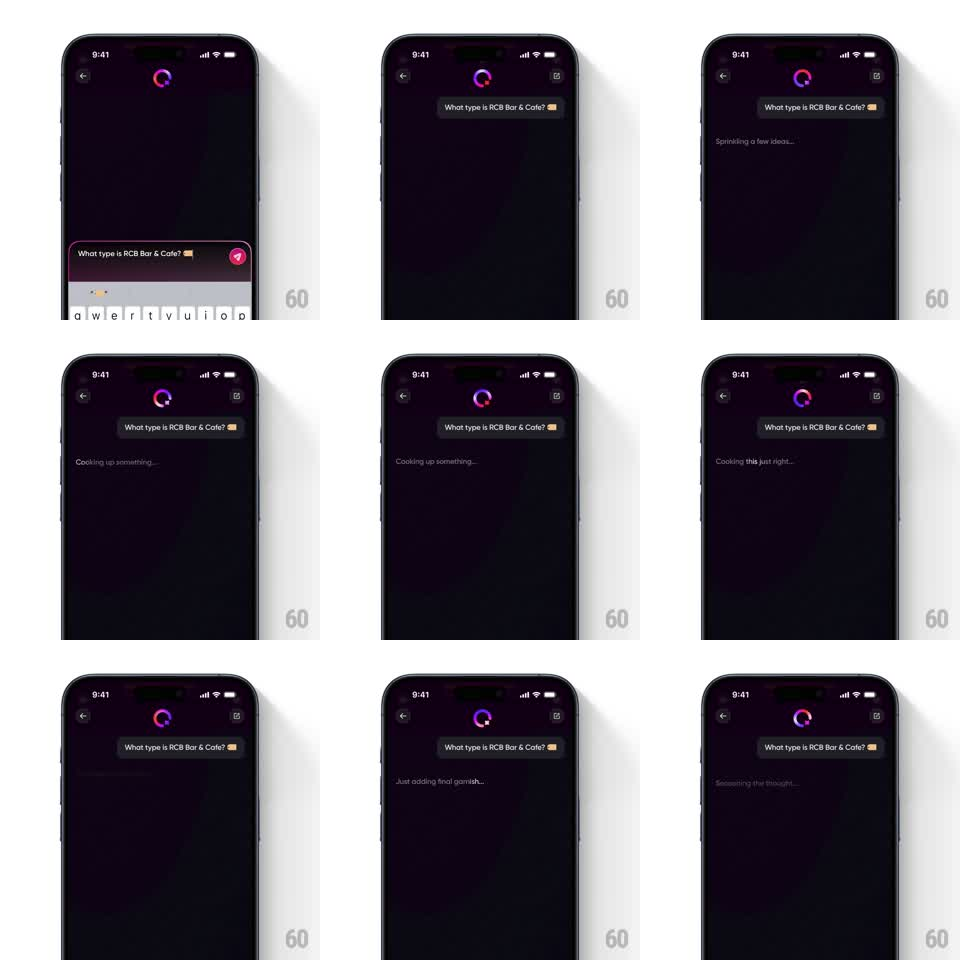

Media
Frame-by-frame

Rebuild this animation 1:1: Swiggy Q's response loading - while the answer cooks, the gradient Q ring spins at the top and a line of playful kitchen status text cycles below the user's question bubble.

Rebuild this animation 1:1: Swiggy Q's response loading - while the answer cooks, the gradient Q ring spins at the top and a line of playful kitchen status text cycles below the user's question bubble.
## Integration
Integration: stack-agnostic spec - springs given as stiffness/damping, timed motions as duration + curve; map every value to your framework and animation library of choice.
## Scene
Q chat sheet, dark plum: back button, the Q gradient ring top-center, the user's question in a pill bubble ("What type is RCB Bar & Cafe?"), and a small italic grey status line underneath where the answer will land. The keyboard has just dismissed.
## Motion spec
Pattern: rotating status phrases under a spinning brand ring.
- The Q ring's gradient rotates continuously (2.4s revolution) and the ring breathes (scale 1 -> 1.05 -> 1, 2.4s).
- The status line cycles through kitchen phrases - "Sprinkling a few ideas...", "Cooking up something...", "Cooking this just right...", "Just adding final garnish..." - each holding ~1.4s, swapping with a vertical roll (old text rolls up and fades, new rolls in from below, 250ms).
- The user's bubble does a one-time settle when sent (scale 0.96 -> 1, 200ms) and stays pinned.
- When the answer arrives, the status line fades out (150ms) and the answer bubble types in; the ring slows to rest over 600ms.
## Calibration
- Status text is small, italic, 50% opacity - a whisper, not a headline.
- Phrase order always moves forward through the kitchen metaphor; no repeats until the list is exhausted.
## Reduced motion
Ring static; status phrases crossfade (300ms).
## Don't miss
- The ellipsis animates (dots cycle 1-2-3, 400ms per step) on every phrase.
- The ring never stops mid-gradient-rotation when the answer lands - it completes its current revolution before easing out.